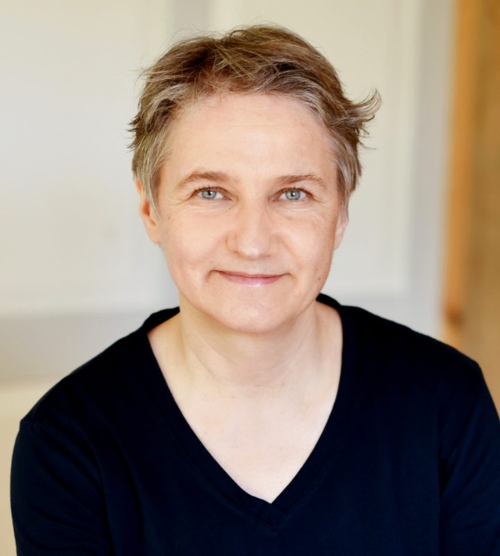
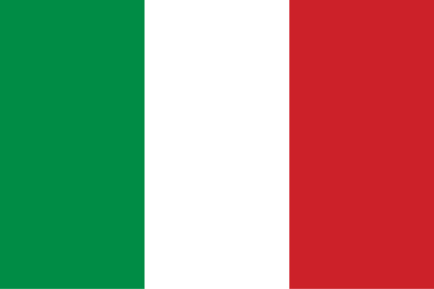

„Leben ist Bewegung - sie sollte frei und ungehindert möglich sein.“

„Leben ist Bewegung - sie sollte frei und ungehindert möglich sein.“
Mein Lieblings Meme des Moments.
Klick mich
Ich bin Osteopathin mit Leib und Seele. Aufgrund meiner langjährigen Erfahrung behandle ich Säuglinge, Kinder, Erwachsene, gerne auch die ganze Familie. Ebenso begleite ich schwangere Frauen und Frauen nach der Entbindung. Für die Neugeborenen bis 10 Wochen, biete ich einen gratis Check-up.
Ausbildung
- ab 2016: Spezialisierung auf Babies und Schwangeren Frauen abgeschlossen.
- 2015: die Grundausbildung zur Osteopathie abgeschlossen
Erfahrung
- seit 2016 im Praxiszentrum Arcus in Thalwill
- 2015: die Grundausbildung zur Osteopathie abgeschlossen
Sprachen
Ich kann Behandlungen in folgenden Sprachen anbieten: deutsch
deutsch englisch
englisch französisch
französisch-  italienisch